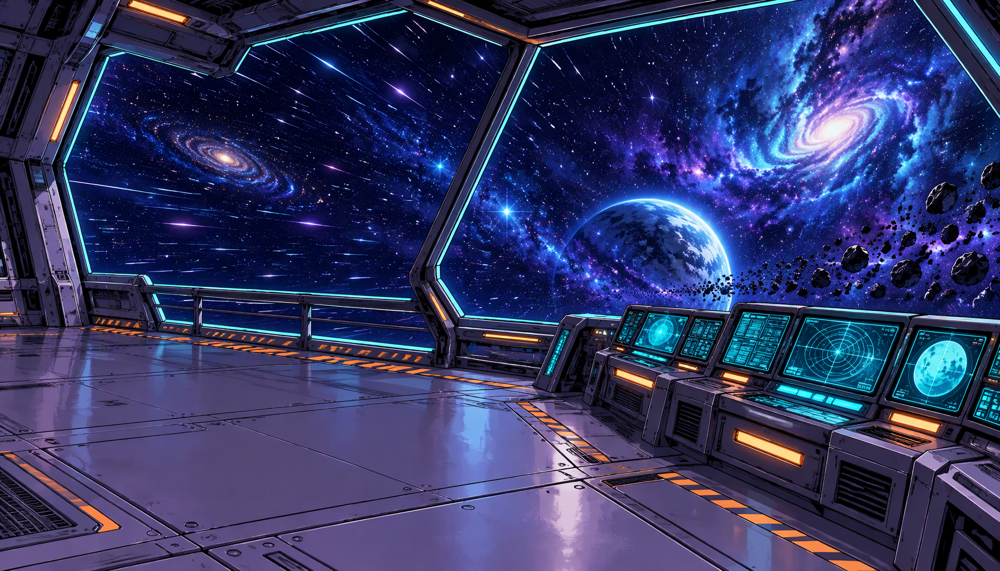
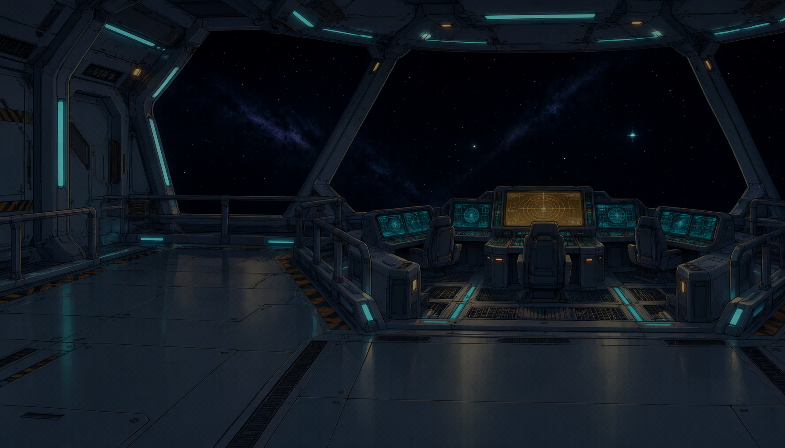
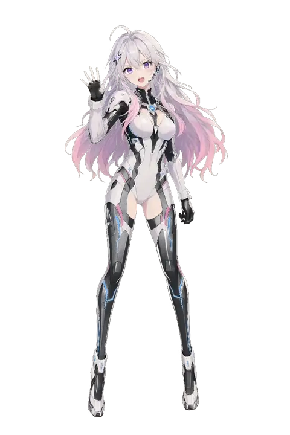
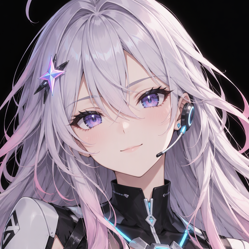

手机端 · V1 定版定稿 · 2026-11-26 · 2026-11-27 同步立绘 WebP 动画
目标：人在外面，能把家里那台机器上的活推进一格。
结构按调研稿 §5.6–5.7：设备 →（作业舱 | 新建单独会话）。
视觉直接用全舱模式那套素材：12 幕 assets/scene-*.png 底景 ·
v22 的星流 canvas · 3 支透明 WebP 立绘动画 assets/v22/*.webp（其余 10 支按需再加）；
但壳子改成圆角矩形 —— 比桌面舰桥柔一档，不再是切角 + 六边形那套硬边。
会话内容仍是桌面 TUI 语法 ❯ / ✦ 汐音 / ◌ / ▸ tool[✓] / ✳。
应用图标与 PC 现用 exe 图标同源；落地计划见 design/35-mobile-dev-plan.md。
一条硬规则：界面上不出现「改状态」的按钮。 待你定 / 待验收 只是索引 —— 点开就回到对应的会话，把那个问题引用进输入框，你用人话说，agent 去改。 唯一例外是「启动这台机器上的 Octopus」：按下那一刻机器上没有 agent 能替你按。
FLOW
设备列表→
选中设备→
作业舱列表|新建单独会话
→主 chat→☰ 编队→待你定 / 会话 / 任务
设备状态=
运行中
在线 · 未启动
离线
本轮没做的（有意识地留白）
推送：先不做（Android 自建 = 前台常驻服务 1–2 天；兜底走自建 ntfy）
VPN：不做。手机系统上已有 Tailscale App
1 · 选设备
一台电脑一张卡，状态一眼可见；未启动的当场能拉起来。

设备
运行中
›
在线·未启动
启动
离线
未接入
＋ 添加设备

⬡ TAILNET已连接SYNC 09:41
顶栏是圆角铭牌：头像 + 编号 + 链路。卡片圆角 18px，状态用点和药丸。右下角站着汐音——3 支透明 WebP 动画（默认开），点她按 3 支循环换下一支。

在电脑上打开 Octopus → 设置 → 手机配对，生成 6 位配对码
（2 分钟有效、一次性；也可以直接粘贴设备令牌）
（2 分钟有效、一次性；也可以直接粘贴设备令牌）
手动填
https://shufang-pc.tailxxxx.ts.net
名字（可留空，默认取域名第一段）
配对码 · 6 位
连 接
手机和电脑要在同一个 Tailscale 网络里
手填 Tailscale 域名 + 名字 + 6 位配对码（或直接粘贴设备令牌）。名字自己写，列表卡片就用它。不经过任何云端。

这台电脑上的 Octopus 没在运行
拉起来之后它会在托盘里待着
手机这边直接进来就行
手机这边直接进来就行
启动 Octopus
正在拉起进程37s
冷启动 40–75 秒 · 好了自动进舱
「没在运行」时她切到
05-concerned 那支。按下启动 = 那台机器上跑 Octopus.exe --tray，不是开新服务。2 · 进入设备之后
两件事：进某个舱（落主 chat），或者开一个不归属任何舱的一次性会话。
＋
新建单独会话
不归属任何舱的一次性对话
›
作业舱 · 4
⌂
octopus-web
C:\xzf\ai\open-octopus
待你定 2
⌂
品牌站改版
C:\work\brand-site
进行中 1
⌂
数据导出
C:\work\etl
待验收 1
⌂
试验场
D:\lab
⬡ 书房 PCLINK 12msDECK 4
顶部点「书房 PC」回设备列表换机器。角标是这一舱里等你动手的条数，不是任务数。
✦ 汐音已完成·15s·4 步·工具 2
✳三处 spec 引用 + 两行验收清单都还在。要清就说一声，我删完给你 diff 摘要。
❯
好，一起清掉
✦ 汐音已完成·8s·2 步·工具 1
▸ Edit spec/phase-1.md [✓]
✳清完了。任务停在待验收，编队里那两条留着等你点头。
待你定 / 会话 / 任务 → 右上角「☰ 编队」
看看编队看 diff最近怎么样
说点什么…
↑
点进舱先落到这：直接跟汐音说话，她站在聊天面板后侧动着，消息列满宽不打折。待你定 / 会话 / 任务走右上角「☰ 编队」。
待你定2会话任务3
待验收任务 · phase-2 产物清理
第 2 轮产物已清理，看下能不能过
3 个 phase 全绿 · 变更窗 12 个 commit
去会话里说 ›
待你定事项 · 1 小时前
phase 2 的 spec 引用要不要一起清掉？
汐音：三处都在，等你点头我就删
去会话里说 ›
点任意一条 = 回到主 chat，把这个问题引用进输入框
最近会话
✦ 汐音 · 三处都在，验收清单里也有两行
❯ 好
主 chat 的「☰ 编队」进这里：待你定 / 会话 / 任务。待你定只列「谁在等你说话」，没有动作按钮——点开就是回主 chat 引用那一问。
3 · 会话与待你定
主 chat 里直接聊；或者从「☰ 编队」的待你定里点进来——后者只是把问题引用到输入框上方。同一个 chat，两种入口。
❯
phase-2 如果不做的话，任务把相关产物也删除了
✦ 汐音已完成·
56s·20 步·
工具 9·1.2M tok·
¥0.15
✳phase 2 产物已删除完毕。删掉的 7 个文件、整个 app-address-selfservice/ 目录：
❯
那 phase 1 的 spec 里还有三处把 phase 2 当成后续工作写的，是不是也要一起去掉？
✦ 汐音已完成·
15s·4 步·
工具 2
◌ 先核对 manifest 里的引用，再一起改 spec 和验收清单
▸ Read .task/manifest.json [✓]
✳三处都在，验收清单里也有两行 —— 一起删，删完给你 diff 摘要。
❯
好
继续停下看 diff切到验收
说点什么…
↑
材质、行头、元信息（步数 / tok / 花费）都和桌面一致。窄屏只做一条改动：meta 允许折两行。
正在回复
spec 和验收清单里的 phase 2 引用，一起清掉吗？
任务 · phase-2 产物清理 · 第 2 轮依据 2 条
❯
那 phase 1 的 spec 里还有三处把 phase 2 当成后续工作写的，是不是也要一起去掉？
✦ 汐音已完成·
15s·4 步·
工具 2
◌ 先核对 manifest 里的引用，再一起改 spec 和验收清单
▸ Read .task/manifest.json [✓]
▸ Grep phase-2 --include=*.md [✓ 5 处]
✳三处 spec 引用 + 两行验收清单都还在。删除不可逆，我停在这儿 —— 你说清就清。
说清楚就行：清掉 / 先别动 / 只删 spec 不动验收清单
回复上面这个问题…
↑
没有「通过 / 退回」。点待你定那一行，问题被挂到输入框上方，你正常说话，状态由 agent 按你的话去改。依据在汐音那条消息里，不另做面板。
4 · 单独会话
不进舱、不建任务，问完就走的场景。

在这儿说点什么
机器上的文件、舱里的状态都能问
说清楚要干什么，它自己找路
说清楚要干什么，它自己找路
今天哪些舱有事看最近的 diff开一个新任务
说点什么…
↑
对应
POST /api/chat/global/sessions。空态用 09-smile，是这几屏里最大的一次立绘。快捷词是脚手架不是功能，第一版可以先不放。立绘 · 动作（全舱模式同一套）
随包 3 支透明 WebP 动画：
assets/v22/*.webp（07-idle / 05-concerned / 09-smile，480×720 · 12fps · 60 帧循环，3 支共 10.2 MB；其余 10 支按需再加）为什么不是 webm：Android 的
video_player 走 SurfaceTexture，VP9 的透明通道会被丢掉 —— 真机就是一块黑底；同一份画稿转成 animated WebP 交给 Image 解码，alpha 正常用法：一屏最多 1 支 —— 设备列表 07-idle · 未启动 05-concerned · 空态 09-smile；点立绘按 3 支循环换下一支；不写动作文字标签
默认开、关掉就不画：设置 →「立绘动画」默认开；关掉时立绘 / 地面光晕整块不显示（没有静态兜底图 —— 那张深底画像贴在场景上就是一块黑方块）；静态 PNG 只做顶栏头像
移动端注意：切后台暂停、减动效定格首帧；一屏别超 1–2 支，耗电和内存都在这
要你拍板的
设备切换入口：现在放在舱列表顶栏（点机器名回列表）。要不要改成底部 tab「设备 / 我的」？
待你定列表的信息量：现在给「来源 + 一句话 + 明细」。要不要压到只剩一句话？
附件/图片上传：本轮没画。要不要能在手机上传截图？
圆角尺度：现在卡片 18px、按钮 16px / 药丸。要再圆一点（接近 iOS 大圆角）还是就这个手感？
定版 · 应用图标

圆角
圆形
与 PC 同一张：
packages/desktop/build/icon.png（512×512），不重绘手机端只做系统遮罩（Android 自适应 / iOS 圆角）；启动页同图